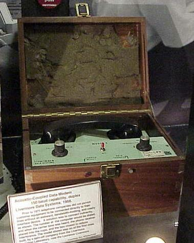
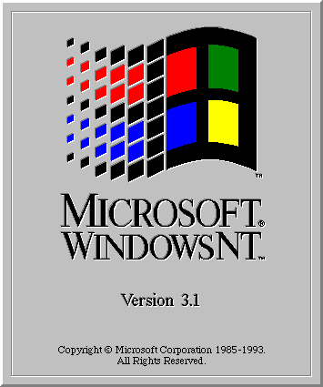
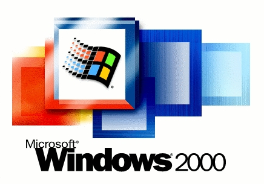
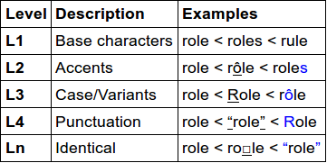
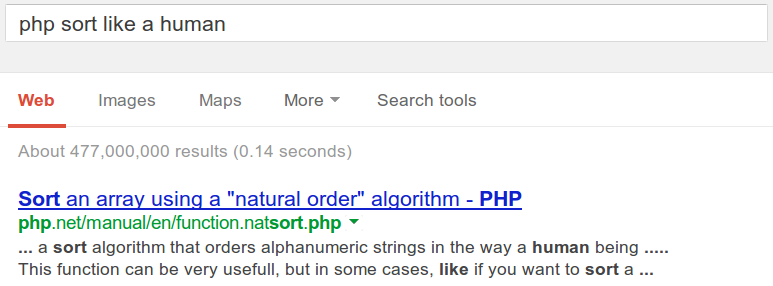

Strange Strings
Joeri Sebrechts
js@mcs.fm
10
1 million
1
Everybody knows this
$str = "abcxyz";
$char = $str[1];
echo $char; // --> b
echo strpos($str, "xyz"); // --> 3
echo strlen($str); // --> 6
echo substr($str, 3, 3); // --> xyz
Actually...
$str = "аbcxyz";
$char = $str[1];
echo $char; // --> �
echo strpos($str, "xyz"); // --> 4
echo strlen($str); // --> 7
echo substr($str, 3, 3); // --> cxy
I � Unicode
ASCII
| From | 1963 |  |
|---|---|---|
| By | ASA (now ANSI) | |
| Purpose | Teletype | |
| Range | 7-bit | |
| Encodes | Source code Parts of English | |
| Hello | 72 101 108 108 111 48 65 6c 6c 6f (00) |
ANSI / latin1 / ISO 8859
| From | 1985 |  |
|---|---|---|
| By | ISO (ISO 8859-x) Microsoft (ANSI) | |
| Purpose | Standardizing the 8th bit | |
| Range | ~ 8-bit | |
| Encodes |
West-European languages (latin1) latin1 + € + word quotes (CP1252) Turkish (latin3), Greek (latin7), ... | |
| Gotcha | Active code page? S-JIS? |
Unicode / UCS-2
| From | 1991 |  |
|---|---|---|
| By | Unicode Consortium (Xerox, Apple, IBM, Microsoft, ...) | |
| Purpose | Simple encoding for all languages | |
| Range | 2 bytes per char (64k) | |
| Encodes | Mainstream languages | |
| Hello | 00 48 00 65 00 6c 00 6c 00 6f (00 00) | |
| Gotcha |
c4 8d (č) == 00 63 cc 8c (c + ◌̌ ) Not ASCII-compatible (nul) 64k |
Unicode / UTF-16
| From | 1996 |  |
|---|---|---|
| Range | 2 or 4 bytes per char 1.1 million code points | |
| Purpose | Actually encode all languages | |
| Hello |
BE: 00 48 00 65 00 6c 00 6c 00 6f (00 00) LE: 48 00 65 00 6c 00 6c 00 6f 00 (00 00) | |
| Gotcha | ASCII-compatibility, null bytes, variable-width, endianness, BOM |
Unicode / UTF-16
BMP / UCS-2
| From | To | Byte 1 | Byte 2 |
|---|---|---|---|
| U+0000 U+E000 | U+D7FF U+FFFF | xxxxxxxx | xxxxxxxx |
Supplementary
| From | To | Byte 1 | Byte 2 | Byte 3 | Byte 4 |
|---|---|---|---|---|---|
| U+10000 | U+10FFFF | 11011xxx | xxxxxxxx | 110111xx | xxxxxxxx |
Unicode / UTF-8
| From | 1992 | |
|---|---|---|
| By | Ken Thompson, Rob Pike | |
| Range | 1 to 4 bytes per char | |
| Encodes | All that is written | |
| Hello | 48 65 6c 6c 6f (00) | |
| Gotcha | Variable-width, BOM |
Unicode / UTF-8
| Range | From | To | Byte 1 | Byte 2 | Byte 3 | Byte 4 |
|---|---|---|---|---|---|---|
| ASCII | U+0000 | U+007F | 0xxxxxxx | |||
| Latin | U+0080 | U+07FF | 110xxxxx | 10xxxxxx | ||
| BMP | U+0800 | U+FFFF | 1110xxxx | 10xxxxxx | 10xxxxxx | |
| Suppl. | U+10000 | U+10FFFF | 11110xxx | 10xxxxxx | 10xxxxxx | 10xxxxxx |
Unicode in PHP
Like Champagne in a paper cup
PHP is a byte processing engine
|
"There is no text, only bytes" |
|
Byte values 0x7F-0xFF are allowed in identifiers.
string functions are byte functions
$char = $str[1]; // = second byte
echo strpos($str, "xyz"); // = position in bytes
echo strlen($str); // = length in bytes
echo substr($str, 3, 3); // = bytes 4 to 6
Processing UTF-8
// u + ̆ = ῠ = 3 bytes
$char = json_decode("\"u\\u0306\"");
$str = "abc".$char;
$pos = strpos($str, $char); // = 3
echo substr($str, $pos, strlen($char)); // = ῠ
echo strtoupper($char); // = ῠ
// but:
echo strlen($char); // = 3
echo strtoupper("é"); // = éDanger Will Robinson!
| bin2hex | One hex pair per byte |
|---|---|
| chr | chr(256) == chr(0) |
| chunk_split | Can split characters |
| count_chars | Counts byte values, not chars |
| str_pad | Pads to length in bytes |
| strcmp | Compares bytes |
| stripos | Only ignores case for ASCII |
| strtoupper | Only handles ASCII |
| wordwrap | Line length is in bytes |
UTF-8 compatible
| base64_encode | Input is binary, output is ASCII |
|---|---|
| base64_decode | Input is ASCII, output is binary |
| json_encode | Expects UTF-8 input |
| json_decode | Expects UTF-8 input |
| html_entity_decode | Accepts UTF-8 param |
| htmlentities | Accepts UTF-8 param |
| htmlspecialchars_decode | Decodes entities to ascii |
| htmlspecialchars | Encodes only ascii characters |
But ... where's the rest?
utf8_decode
The easiest way to determine the character count of a UTF8 string is to pass the text through utf8_decode() first.
- php documentation comment on strlen()
This is always the wrong thing to do.
And if not, use mb_convert_encoding()
The holy trinity
| iconv | mbstring | intl |
|---|---|---|
iconv
$str = "аbcxyz"; // cyrillic a
iconv_set_encoding("internal_encoding", "UTF-8");
echo iconv_strlen($str); // --> 6
echo iconv_strpos($str, "xyz"); // --> 3
echo iconv_substr($str, 3, 3); // --> xyz
| From | PHP 4.0.5 |
|---|---|
| Based on | libiconv |
| Charsets | platform-dependent |
| Functions | few |
| Units | Code points, not characters |
mbstring
$str = "аbcxyz"; // cyrillic a
mb_internal_encoding("UTF-8");
echo mb_strlen($str); // --> 6
echo mb_strpos($str, "xyz"); // --> 3
echo mb_substr($str, 3, 3); // --> xyz
| From | PHP 4.0.6 |
|---|---|
| Based on | mbfilter (sgk) |
| Charsets | most |
| Functions | most, but not mb_strcmp |
| Units | Code points, not characters |
intl
$str = "аbcxyz"; // cyrillic a
echo grapheme_strlen($str); // --> 6
echo grapheme_strpos($str, "xyz"); // --> 3
echo grapheme_substr($str, 3, 3); // --> xyz
| From | PHP 5.3.0 |
|---|---|
| Based on | libicu |
| Charsets | UTF-8 |
| Functions | many |
| Units | Graphemes, not characters |
String length roulette
$str = json_decode("\"u\\u0306\""); // u + ̆ = ῠ
echo strlen($str); // 3 = bytes
echo mb_strlen($str); // 2 = code points
echo iconv_strlen($str); // 2 = code points
echo grapheme_strlen($str); // 1 = graphemes
var text = 'u\u0306';
console.log(text.length); // 2 = code points
mysql, postgres, oracle: char_length() = 2
WWFD?
- Symfony 2: if / else structure, e.g. LengthValidator
if (function_exists('grapheme_strlen') && 'UTF-8' === $charset) { $length = grapheme_strlen($stringValue); } else if (function_exists('mb_strlen')) { $length = mb_strlen($stringValue, $charset); } else { $length = strlen($stringValue); } - Zend Framework 2: StringUtils / StringWrapper
- Laravel 4: Illuminate\Support\Str
- Cake: Cake/Utility/String
Sorting
Fear this should you
Unicode Collation
The problem
| Language | Swedish: | z < ö |
|---|---|---|
| German: | ö < z | |
| Usage | German dictionary: | of < öf |
| German telephone: | öf < of | |
| Customizations | Upper-first: | A < a |
| Lower-first: | a < A |
Unicode Collation
Unicode Collation Algorithm
|  |
- Normalization
- Collation element lookup
- Sort key composition
(DUCET, CLDR, custom weighting) - Binary sort
The obvious
$arr = array("resume", "résumé", "rope");
sort($arr);
echo implode($arr, ", ");
// --> ?
resume, rope, résumé
To the google-mobile

$arr = array("resume", "résumé", "rope");
natsort($arr);
echo implode($arr, ", ");
resume, rope, résumé
RTFM
bool sort ( array &$array [, int $sort_flags
= SORT_REGULAR ] )SORT_LOCALE_STRING - compare items as strings, based on the current locale. It uses the locale, which can be changed using setlocale()
$arr = array("resume", "résumé", "rope");
sort($arr, SORT_LOCALE_STRING);
echo implode($arr, ", ");
resume, rope, résumé
About locale
- Default: "C"
- Byte-based collation
- Syntax: "en_US.UTF8"
- Language and region determine collation order
- Encoding needed to recognize code points
$arr = array("résumé", "rope", "resume");
setlocale(LC_COLLATE, "en_US.UTF8");
sort($arr, SORT_LOCALE_STRING);
echo implode($arr, ", ");
resume, résumé, rope
The curse that keeps us cursing
From the MSDN page for setlocale
The set of available languages, country/region codes, and code pages includes all those supported by the Win32 NLS API except code pages that require more than two bytes per character, such as UTF-7 and UTF-8.
No more detours
$arr = array("résumé", "rope", "resume");
$col = new Collator(""); // "" = DUCET
$col->sort($arr);
echo implode($arr, ", ");
resume, résumé, rope
- PHP 5.3+
- 'intl' extension
- Collator::compare()
ORDER BY
I never liked sort() anyway
mysql to the rescue
create database test character set utf8;
create table words (word varchar(20)); $db = new PDO(
"mysql:host=localhost;dbname=strings;charset=utf8");
// for mysqli: mysqli_set_charset("utf8");
$db->exec("insert into words " .
"values ('rope'),('résumé'),('resume')");
$stmt = $db->query("select * from words order by word");
$rows = $stmt->fetchAll(PDO::FETCH_COLUMN, 0);
echo implode($rows, ", ");résumé, resume, rope
JavaScript is no better
['resume', 'résumé', 'rope'].sort()
resume, rope, résumé
['resume', 'résumé', 'rope'].sort(function(a, b) {
return a.localeCompare(b);
});
resume, résumé, rope
Browser output
Easy as 355 / 113
Avoid charset autodetection
3 methods:
<head>
<meta http-equiv='Content-Type'
content='text/html; charset=UTF-8'>
header('Content-Type:text/html; charset=UTF-8');
// 'UTF-8', not 'UTF8'!
ini_set('default_charset', 'UTF-8');
Recap
What I said while you were sleeping
Proper string handling example
Rules of the road
- Use UTF-8
- Manipulation
- Use str* when shuffling bytes
- Use mb_strlen() for validation
- Use mb_str*() for character handling
- Sorting
- Collator, not sort()
- Accept mysql for what it is
- String.localeCompare
- Output
ini_set('default_charset', 'UTF-8')